植生滯留槽
LID設施種類繁多，其中植生滯留槽(bioretention cell)又稱之為雨花園(rain garden) ，是一種結合物理性、化學性與生物性過濾的暴雨逕流收集與污染削減之LID設施。
傳統對植生滯留槽的看法，以小面積、小區塊形式設計為小型貯留設施，常見於停車、道路分隔島或易積水之區域，主要功效為衰減或處理暴雨逕流量，兼具美化環境之功效。

植生滯留槽
植生滯留槽並非只有貯留功能，其亦具有過濾淨化水質的功效，茶園產生逕流時，逕流水可以直接流入植生滯留槽中貯留並降低尖峰流量，而茶園逕流水中皆附有許多污染物，當逕流水進入植生滯留槽過濾設施後，設施內部之材料亦會對水體中污染物進行削減、降低水中污染濃度。

植生滯留槽
植生滯留槽優點
1.過濾、淨化水質
2.衰減或處理暴雨逕流量
3.儲存、降低尖峰流量
4.設施內部材料對水體中汙染進行削減、降低汙染濃度
5.美化當地環境

樣式介紹
模組化植生滯留槽
具有質量輕好搬運之特性，且內部的填充介質材質均方便以人工替換，具有良好的水力負荷條件，來處理更多的農田暴雨逕流量。
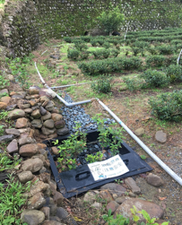樣式介紹
塑膠布槽體
槽體尺寸可依照現地環境地形做調整。
可設置面積大。
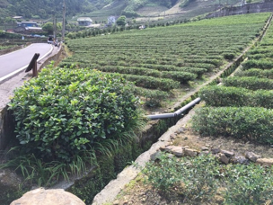樣式介紹
塑膠桶槽體
入流口與出流口高程差明顯
無特殊條件
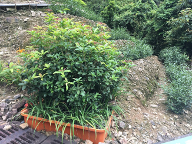樣式介紹
河岸護岸型槽體
適用於茶園鄰近於河岸邊。
河灘地面積需足夠。
可與河岸護岸工程做結合。
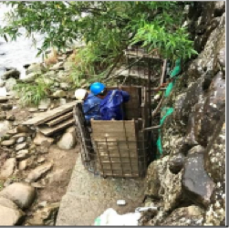樣式介紹
入滲型槽體
入流口與出流口無明顯高程差。
不須設出流管。
材料介紹
植生滯留槽設施的基本組成包括植物、土壤介質層、礫石過濾層及出流暗管。土壤介質層可以保水及保肥使植樹生長健康，介質層與礫石層亦有淨水功效，植生滯留槽設置之機動性極高，其因地制宜性佳可依照集水區面積大小或污染濃度進行設計設施的大小，設施內部材料均為天然材料，且設施不需要頻繁或昂貴的維護，因此國外已普遍使用於道路旁或校園內。
材料介紹
1.土壤介質層：為改善土壤入滲能利而改採用現地土壤與介質材料相互混合，作為土壤介質層，其主要材料為坪林土、泥炭土、真珠石以及蛭石，材料比例依序為50%、15%、7%及13%，配比除了有效提高逕流水入滲能力，更可提供槽體植栽與微生物生長養分，當污染水體入滲進土壤介質層時，土壤介質層將進行吸附及降解污染物，使污染水體達到削減的功效。
材料介紹
材料介紹
2.粗砂層﹕作為系統之砂濾層，強化排水及去除水中的懸浮與顆粒雜質，藉物理性的攔阻及沉澱作用，將懸浮物質加以捕捉，自水中分離，同時可以培養微生物菌，達到生物性過濾的目的。
材料介紹
3.碎石層﹕利用石頭間原有的孔隙，當污水流經這些大小不一的孔隙時，水的流動會受石頭阻擋而致流速減緩，污水裡的懸浮物質會與礫石接觸並於孔隙內沉降；石頭粗糙的表面，也能提供微生物附著與生長，並形成具有粘性的生物膜，生物膜能吸著污水中的懸浮物質，整體機制為礫間接觸氧化法，當水中溶解性的有機物在流經礫石表面的生物膜時，被微生物攝取或利用而達到固液分離的效果，使水質獲得淨化，也因碎石間的孔隙，得以確保出流流速。
材料介紹

材料介紹
4.阻隔層﹕分別為地工織物及紗網兩部分，地工織物將土壤介質層與粗砂層分隔開，利用地工織物阻隔特性阻絕上層土壤介質層進入粗砂層中而造成阻塞，且地工織物開孔徑特性，能將污染水體中之懸浮固體攔阻，其孔隙也能提供微生物附著與生長，並形成具有粘性的生物膜，進而達到淨化污染水體之功效。砂網將粗砂層與碎石層分隔開，目的為阻絕上層粗砂層流入碎石層中而造成阻塞，故網目不宜大於上層粗砂之粒徑，且為避免網目太小影響入流水之滲流，網目亦不能過細。
材料介紹
5.植栽﹕利用植物行光合作用與呼吸作用，吸收污染物降解後之營養鹽，進而達到淨化污染水體之功效。由於設施設置皆於新北市坪林區，植栽應挑選生長適溫與台灣相符，且對於氣候耐旱、耐高溫、好潮濕及生長力極強，常用植栽分別為桂花與仙丹花。
6.卵石層 ﹕主要材料為灰卵石，其鋪置於土壤介質層上方，功能為減緩逕流流速降低土壤沖刷，及降低土壤介質層水分蒸發速率。
植生滯留槽設置流程
1.基地位置之土方挖除並穩固基地基礎
2.置入槽體或防水膜
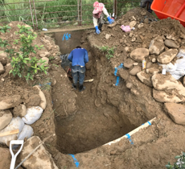植生滯留槽設置流程
3.設置出流管
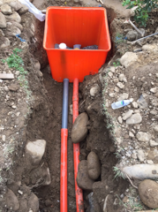植生滯留槽設置流程
4.鋪設碎石級配料15cm
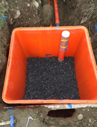植生滯留槽設置流程
5.鋪設紗網防止砂石掉落碎石層縫隙
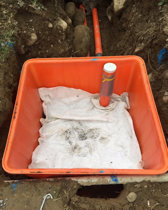植生滯留槽設置流程
6.鋪設粗砂10cm
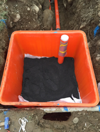植生滯留槽設置流程
7.鋪設不織布提供微生物生長及隔絕土讓介質層
植生滯留槽設置流程
8.鋪設土壤介質層60cm
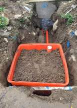植生滯留槽設置流程
9.種植植栽
10.鋪設卵礫石5cm
11.架設入流管或入流溝
12.設施美化
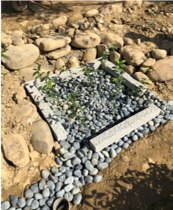維護管理
為了確保前期計畫所設置的LID設施可以有效發揮水質淨化的功效，故本研究團隊迄今仍定期前往之前完成之植生滯留槽場址進行維護管理。植生滯留槽設施須進行定期維護作業，包括茶園排水路、植生滯留槽高程、植栽、護土用不織布、調配土、排水管等材料設備維護，本研究團隊根據「降雨逕流非點源污染最佳管理技術(BMPs)手冊」並依照植生滯留槽之特性，置作維護管理檢核表，並提出可供茶園維護管理者參考之檢討改善建議，茲就各項維護管理作業內容彙整如下：
維護管理
1.茶園排水路
茶園排水路必須確保暢通，讓降雨逕流能集流至植生滯留槽內。原則每月檢視一次，並疏通排水路有堵塞的部分。
維護管理
2.植生滯留槽
2.1槽頂表面高程
植生滯留槽槽頂高程必須低於其周圍的茶園排水路，使降雨逕流能順利流入槽內。原則應每月檢視一次，有土砂淤積部分必須清除。此外，每年應至少進行兩次沉積物移除清理，而暴雨前後應進行特別檢查維護。
維護管理
2.植生滯留槽
2.2植栽
原則上植栽需定期澆水（可配合茶園既有澆灌系統），且每月定期檢視一次，看是否有生病或死亡之植物，若有則需更換，若植物均正常生長，應定期修剪及除草，多年生植物於成長季節末期應進行修剪。
維護管理
2.植生滯留槽
2.3護土用不織布
護土用不織布是用來避免調配土層的表土被沖蝕流失。原則上每月檢視一次，若有損毀或土壤流失情形，需更換重新覆蓋並增添調配土。此外，每二至三年應評估更換不織布。
維護管理
2.植生滯留槽
2.4調配土層
因為降雨逕流中之營養鹽和重金屬等物質會破壞土壤正常功能，降低陽離子交換容量，減少土壤顆粒間對於污染物吸附能力，因此，植生滯留槽內之調配土層對污染物過濾攔阻效益會隨時間降低，為維持植生滯留槽有效運作，調配土層必須定期更換，原則上為每二年一次。
維護管理
2.植生滯留槽
2.5排水管
為確保植生滯留槽排水順暢，避免排水管堵塞是重要的。原則上每二個月對植生滯留槽進行分次澆水測試，確定植生滯留槽排水功能正常，若有堵塞情形，則需立即清通。
維護管理流程
入流流徑清淤及卵石清洗
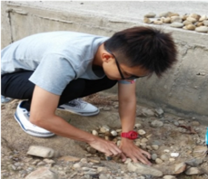 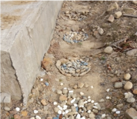維護管理流程
出流口阻礙物清除
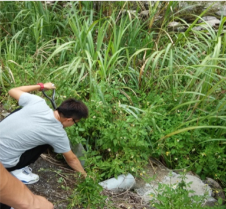 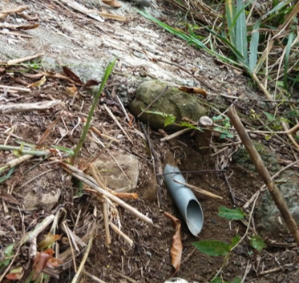維護管理流程
設施表面之堆積物清除
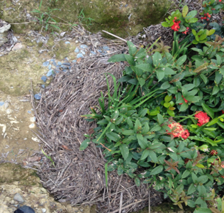 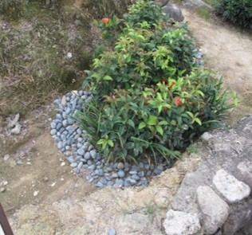維護管理流程
入流口之淤泥清除
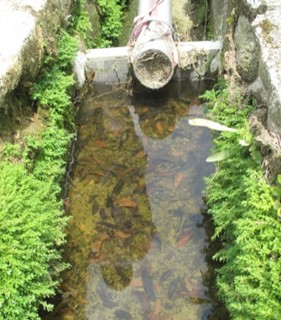 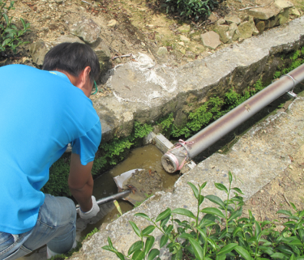維護管理流程
入流流路之泥砂清除及卵礫石清洗
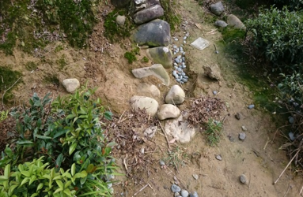 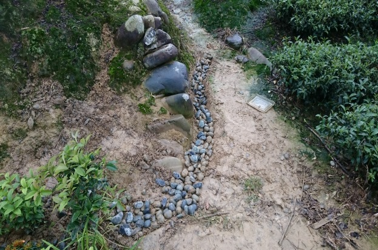維護管理流程
枯枝、枯葉修剪
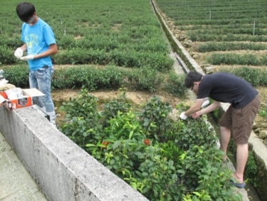 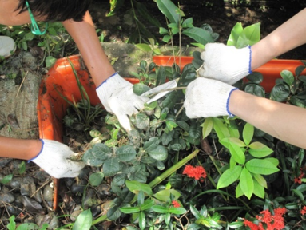